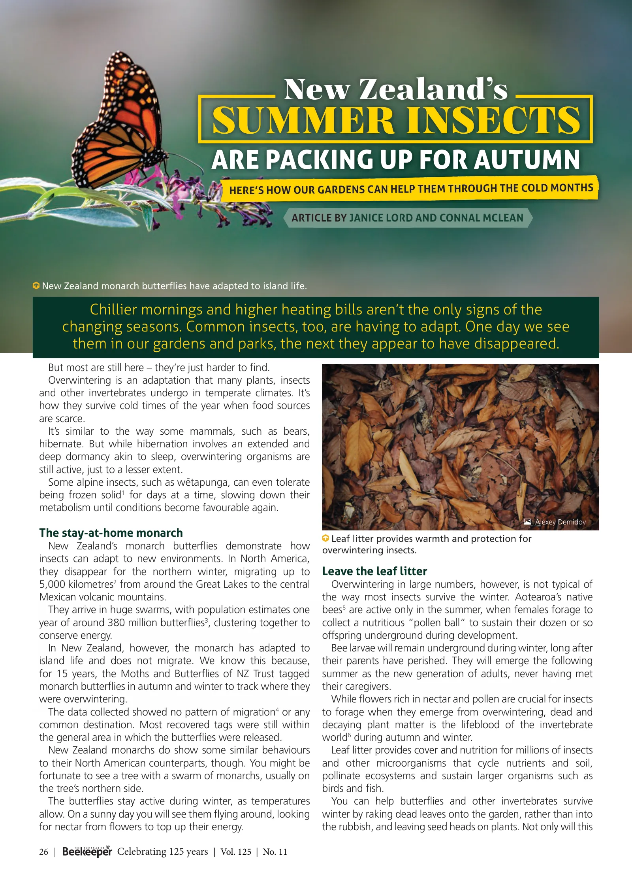

New Zealand monarch butterflies have adapted to island life.
But most are still here – they’re just harder to find.
Overwintering is an adaptation that many plants, insects
and other invertebrates undergo in temperate climates. It’s
how they survive cold times of the year when food sources
are scarce.
It’s similar to the way some mammals, such as bears,
hibernate. But while hibernation involves an extended and
deep dormancy akin to sleep, overwintering organisms are
still active, just to a lesser extent.
Some alpine insects, such as wētapunga, can even tolerate
being frozen solid1 for days at a time, slowing down their
metabolism until conditions become favourable again.
The stay-at-home monarch
New Zealand’s monarch butterflies demonstrate how
insects can adapt to new environments. In North America,
they disappear for the northern winter, migrating up to
5,000 kilometres2 from around the Great Lakes to the central
Mexican volcanic mountains.
They arrive in huge swarms, with population estimates one
year of around 380 million butterflies3, clustering together to
conserve energy.
In New Zealand, however, the monarch has adapted to
island life and does not migrate. We know this because,
for 15 years, the Moths and Butterflies of NZ Trust tagged
monarch butterflies in autumn and winter to track where they
were overwintering.
The data collected showed no pattern of migration4 or any
common destination. Most recovered tags were still within
the general area in which the butterflies were released.
New Zealand monarchs do show some similar behaviours
to their North American counterparts, though. You might be
fortunate to see a tree with a swarm of monarchs, usually on
the tree’s northern side.
The butterflies stay active during winter, as temperatures
allow. On a sunny day you will see them flying around, looking
for nectar from flowers to top up their energy.
Leave the leaf litter
Overwintering in large numbers, however, is not typical of
the way most insects survive the winter. Aotearoa’s native
bees5 are active only in the summer, when females forage to
collect a nutritious “pollen ball” to sustain their dozen or so
offspring underground during development.
Bee larvae will remain underground during winter, long after
their parents have perished. They will emerge the following
summer as the new generation of adults, never having met
their caregivers.
While flowers rich in nectar and pollen are crucial for insects
to forage when they emerge from overwintering, dead and
decaying plant matter is the lifeblood of the invertebrate
world6 during autumn and winter.
Leaf litter provides cover and nutrition for millions of insects
and other microorganisms that cycle nutrients and soil,
pollinate ecosystems and sustain larger organisms such as
birds and fish.
You can help butterflies and other invertebrates survive
winter by raking dead leaves onto the garden, rather than into
the rubbish, and leaving seed heads on plants. Not only will this
Chillier mornings and higher heating bills aren’t the only signs of the
changing seasons. Common insects, too, are having to adapt. One day we see
them in our gardens and parks, the next they appear to have disappeared.
Leaf litter provides warmth and protection for
overwintering insects.
ARTICLE BY JANICE LORD AND CONNAL MCLEAN
Alexey Demidov
HERE’S HOW OUR GARDENS CAN HELP THEM THROUGH THE COLD MONTHS
26 |
Celebrating 125 years | Vol. 125 | No. 11